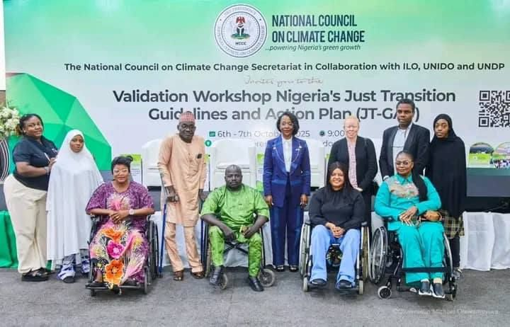
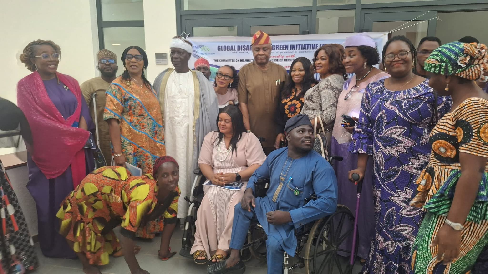
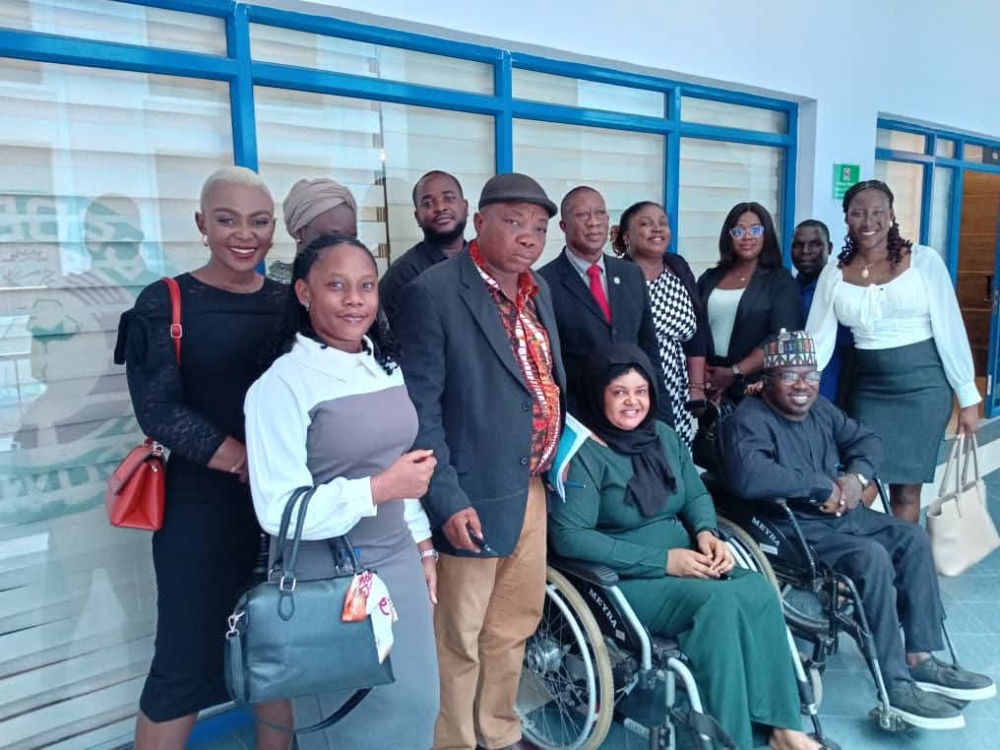
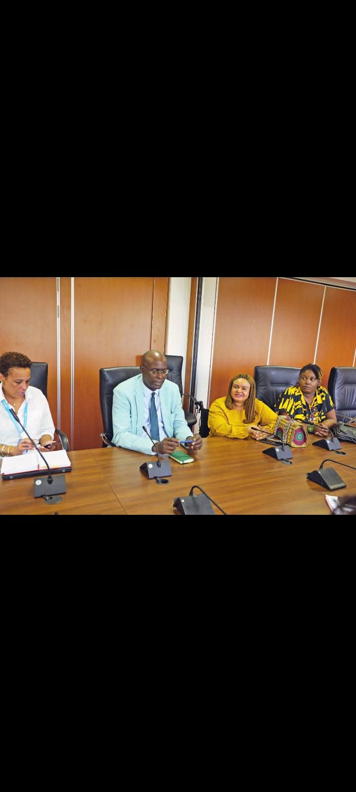

News & updates
Insights

National Validation Workshop: Nigeria's Just Transition Guidelines and Action Plan
GDGI joined the National Council on Climate Change Secretariat, in collaboration with ILO, UNIDO and UNDP, to validate Nigeria's Just Transition Guidelines and Action Plan (JT-GAP) — the framework GDGI helped shape with disability provisions in 2025.
Read more →
GDGI Officially Launches at the National Assembly Complex, Abuja
Disability leaders, government representatives, royal representatives, and country directors from ILO, WHO and UNDP gathered for GDGI’s official launch and a panel on disability-led climate action.
Read more →Visit to ECOWAS Commission, Abuja
GDGI, alongside partners ASTEVEN Group and WAANSA, met the ECOWAS Commission to explore partnership opportunities integrating disability inclusion into regional green-environment policy.
Read more →
Partnership with the Office of the Chairman, House Committee on Disability Matters
GDGI President Angelina Ugben met with Rt. Hon. Bashiru Dawodu Anyila to strengthen partnership and formally receive a letter of collaboration on merging disability inclusion with climate action.
Read more →Advocacy Visit to the UN House, Abuja
GDGI President Angelina Ugben led a delegation to the UN House in Abuja, welcomed by Resident Coordinator Mohamed Malick Fall, opening pathways for collaboration with the United Nations.
Read more →
Participating in CREN's 2025 AGM
GDGI joined the Council for Renewable Energy Nigeria (CREN) at its Annual General Meeting in Abuja, deepening a shared vision for disability inclusion in Nigeria’s renewable energy future.
Read more →